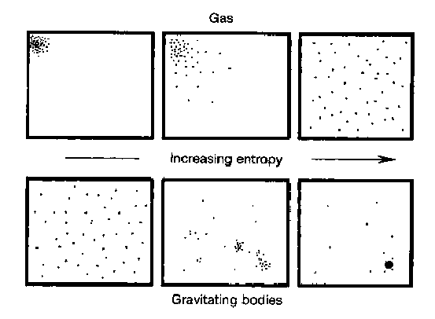

February 7, 2024
Like many people my age, I am struck by a looming sense of uncertainty about my future. I will graduate from college soon, only to be thrust into the world with little inkling of whether my future will look like my past. The questions that occupy my mind demonstrate this uncertainty. What will I spend the next stage of my life doing? Who will I spend time with? Will I make a bad decision and regret it forever? These questions are intimately human, yet my intuition tells me that the anxiety they cause is more fundamental.
For instance, when I picture myself as a shark, a tree, or even a rock, I imagine I would have the same questions. After all, the inaccessibility of the future applies to these creatures too. They might perceive their surroundings and self differently, but they are constrained by the same basic truth of physical reality as me: knowledge of the past, but ignorance about the future. This fact is often called the arrow of time, and it turns out that we can trace its roots all the way back to thermodynamics...
Thermodynamics allows us to study systems with many different parts. It connects the physics of microscopic things to those in the macroscopic world. A common example is a gas in a box, but thermodynamics is very general and can be applied to many different systems. One quantity of central importance in thermodynamics is entropy. Entropy can be interpreted in many ways, but generally it is a measure of the amount of disorder in a system. One particularly useful interpretation of entropy is the amount of information needed to specify the state of a system[1][2]. This makes sense with the traditional definition based on disorder because a disordered state would require many bits to specify, while an ordered one would take very few.
For example, if we consider a box of gas particles, the system will have low entropy if the particles are constrained to a small portion of the box. In this case, there are not many positions the gas particles can occupy, and hence not much information is needed to describe the system. If the gas particles are distributed throughout the volume of the box, there are many positions each of them could have. This means that one must utilize a large amount of information to specify the state of the system. This concept is illustrated by the figure below.

The definition of entropy in terms of information is a useful concept, but what does it have to do with time? The connection between time and entropy is called the second law of thermodynamics. While it has a dry name, it is incredibly interesting and one of the most fundamental laws of physics. The second law states that as time passes by, the entropy of the universe must increase. In other words, the entropy of a small portion of the universe may decrease during some process, but somewhere in the universe there must be a larger increase in entropy to compensate.
Crucially, this law establishes the arrow of time that is so important to our physical reality. In saying that entropy must always increase, we are able to define a quantity that tells us which direction is the past and which is the future. You simply must measure the entropy at two points in time, and the time with the larger value must always come later. Interestingly, this is one of the only laws of physics that has such a relationship with time. Most others are the same whether time runs forwards or backwards, and hence tells us nothing about which way time should run. However, all systems must obey the second law, so time always runs forwards; the arrow of time[3]!
Now that we know how thermodynamics creates an arrow of time, we can relate this to humans and determine why I'm so stressed about the future. The key to this connection is the idea of a correlation. If there is a correlation between two parts of a system, the parts are related in some way. We can extend the example of a gas in a box to explain this. As time goes on and the particles hit the sides of the box, they become correlated with the environment outside the box because the state of the interior particle is related to those outside. That is, the impacts the particles have with the box influence the environment, so they must be correlated.
This can be viewed using the information definition of entropy by realizing that one would have to specify not only the state of the particles in the box, but also some aspects of the environment, which only increases the amount of information (and hence entropy) necessary[4]. In this way we can see that this correlation between the environment and the system increases the entropy of the system. Using the arrow of time derived from the second law, we know that these correlations increase as time progresses.
The idea that correlations increase entropy applies to abstract systems of gas particles, but it also applies to humans, sharks, trees, and everything else. Humans are physical beings, so we too must obey the second law of thermodynamics. However, humans can create casual relationships. That is, we can take actions in the world and cause things to happen. In the process of doing so, we create correlations between ourselves and the environment. In a simple example, the action of me pressing a key on the keyboard creates a correlation between myself and the screen I am looking at. If you knew exactly how my finger was moving while I was typing, you would be able to predict the letter that would appear on the screen. Therefore, humans create correlations between themselves and their environment, which increases entropy. According to the second law, this means that our actions can only influence the future, not the past. Any action we take must increase the entropy, and an increased entropy can only occur in the future.
So now we see the source of my anxiety about the future. Ultimately, the second law of thermodynamics dictates that my actions can influence the future, but not the past. As a result, the set of possible futures is much larger than the set of possible pasts (there is only one past). Humans have internalized this notion . Rationally, we know that whatever choice we make now will have consequences that are irreversible, but we still feel the same sense of anxiety about these decisions. Does understanding this conundrum at the level of thermodynamics help relieve some of this anxiety? Probably not, but it was worth a shot.